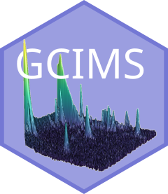

GCIMS 
GCIMS is an R package implementing a preprocessing pipeline for Gas Chromatography – Ion Mobility Spectrometry samples.
Installation
GCIMS can be installed with the remotes package. Ensure you have it installed with:
if (!requireNamespace("BiocManager", quietly = TRUE))
install.packages("BiocManager")
if (!requireNamespace("remotes", quietly = TRUE))
install.packages("remotes")You can then install the package with:
remotes::install_github("sipss/GCIMS")Checkout our Introduction to GCIMS to start.